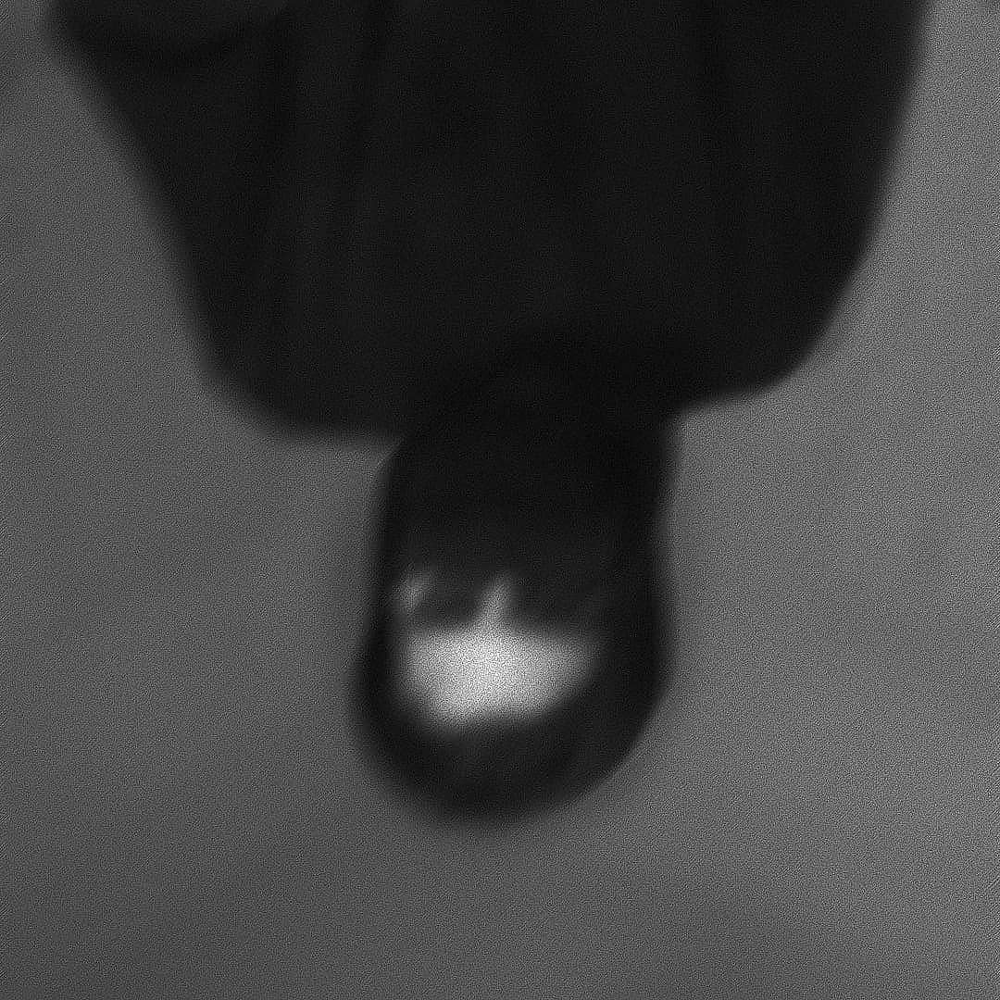

About
xaocaf a visual artist focused primarily on expressing melancholic themes and experiences in forms of both photography and videography. as an experimental artist various collections of thoughts and ideas could be seen emerged through his artworks.
a world filled with so much chaos and despair, could be such an inspiration to create and capture. and as it might be diffcult to express with words it is not with vision and sight.
